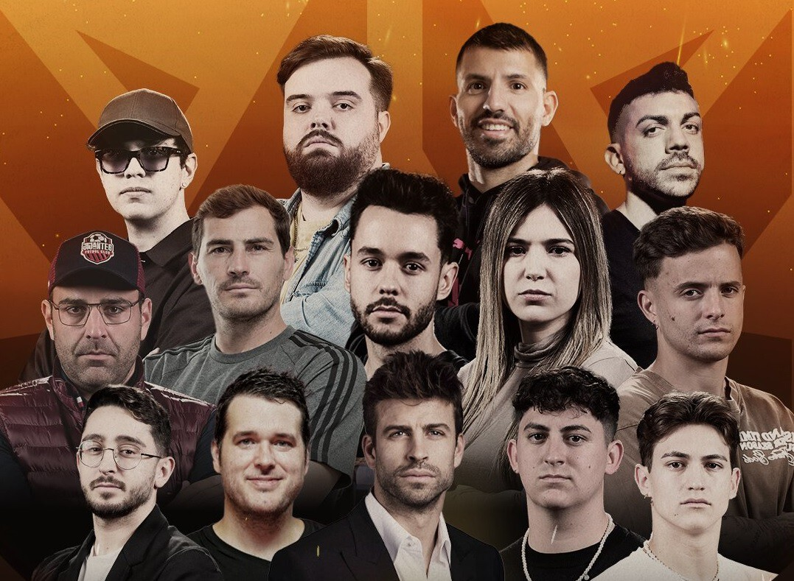
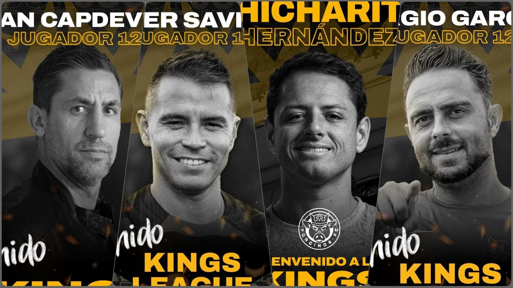

Presidentes "Celebrities"

Los presidentes son Streamers del mundo del deporte contando además con periodistas deportivos como Adri Contreras y futbolistas profesionales como Sergio el Kun Agüero. Entre los streamers contamos con Djmario, Ibai y los Buyers entre otros.
Jugadores especiales

En esta nueva liga han participado grandes ex-futbolistas como Saviola, jugador de equipos como el FC Barcelona, "Chicharito" Hernandez, actualmente jugador de la liga Estadounidense o Joan Capdevila, ex-campeón del Mundial de Fútbol 2010 con España.
Historia
La Kings League es un torneo de fútbol en el que participan 12 equipos. Esta competición está impulsada por el ex jugador del FC Barcelona Gerard Piqué y por el streamer Ibai Llanos: de una charla entre ambos, ya asociados para la creación de otros torneos, surgió esta idea basada en el cambio de algunas reglas del fútbol para hacerlo más atractivo y llamar la atención de nuevos aficionados.
La duración de los partidos de la Kings League es de 40 minutos, sin detención del tiempo y repartidos en dos partes de 20 minutos. Si al término del encuentro hay empate, el ganador se decide a través de una tanda de penaltis que consiste en un uno contra uno: el atacante sale desde el centro del campo y dispone de 5 segundos para marcar al portero rival.
Si el guardameta toca el balón y evita que entre en la portería, se considera como penalti fallado. Otras normas fundamentales de la Kings League son las siguientes:
Los cambios son ilimitados para cada equipo.
No hay prórrogas: los partidos se deciden en la tanda de penaltis si terminan con empate en el marcador.
Los penaltis se lanzan desde el centro del campo.
El partido comienza con la pelota en el centro del campo. Los jugadores comienzan en la línea de fondo y tienen que ir a por el balón.
Una tarjeta amarilla se castiga con 2 minutos de expulsión. Tras una tarjeta roja, el equipo debe esperar 5 minutos en inferioridad numérica hasta poder reemplazar al futbolista expulsado.
Cada equipo tiene un arma secreta escogida al azar al comienzo de la jornada. Estas armas secretas pueden ser: un gol doble (durante 2 minutos, los goles conseguidos desde el minuto en el que se activa el arma valen por dos), sanción (se elige a un jugador del equipo rival para que sea expulsado durante 2 minutos), robo de carta, penalti (el equipo que activa el arma puede lanzar un penalti) y comodín.